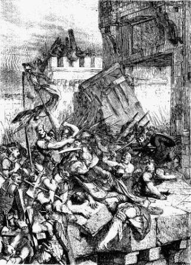

В начале...

Название первой книги Библии, Бытие, означает начало. Первые две главы Бытия говорят нам, что Бог создал вселенную: звезды, землю и все другие планеты, а также каждое живое существо, которое существует или когда-либо существовало. Самым особенным творением Бога были люди: люди. Люди особенные, потому что они созданы по образу Божьему. (См. Бытие 1:26-27.)
Адам и Ева
Третья глава Бытия повествует историю о том, как грех вошел в мир. Адам и Ева, первый мужчина и первая женщина, были искушены поверить, что Бог солгал им. Поверив в эту ложь, они затем были убеждены, что действительно могут БЫТЬ подобными Богу. Когда Бог увидел, что они были непослушны, Адам и Ева больше не наслаждались теми открытыми отношениями с Ним, которые у них были раньше; грех отделил их от Бога. И так было с каждым человеком, кроме Одного, когда-либо жившего с тех пор: все мы отделены от Бога грехом.

Четвертая и пятая главы Бытия продолжают печальную историю растущего нечестия человечества. Бог еще не дал нам Своих заповедей о правильной жизни, и люди вели себя так, как им хотелось. Казалось, вся цивилизация склонна к насилию и безнравственности всех видов. Увидев плачевное состояние своего высшего творения, Бог пожалел, что создал существа способными на такое поведение.
Ной
Когда Бог взглянул на Свое греховное творение, Он нашел одного человека, который ходил с Господом: Ноя. Бог решил уничтожить человечество и начать все заново, с Ноем и его семьей. В главах с шестой по восьмую книги Бытия рассказывается о том, как Бог уничтожил все человечество потопом, спасая только Ноя, его жену, а также трех их сыновей и их жен.
Главы с девятой по одиннадцатую Бытия повествуют нам о том, как после потопа земля была заселена сыновьями Ноя, Симом, Хамом и Иафетом. В конце одиннадцатой главы мы знакомимся с совершенно особенным человеком, человеком, которого Бог призвал стать отцом народа, который Он мог бы назвать Своим собственным.


Авраам
В Бытии Библия рассказывает нам о ряде людей, которые «ходили с Богом», как Ной. Ходьба с Богом требует веры: беспрекословной веры в то, что Бог сделает то, что обещает. Ною потребовалась великая вера, чтобы поверить в то, что Бог уничтожит все население земли потопом, и следовать Божьему указанию построить ковчег (большую лодку), когда люди вокруг него высмеивали его, пока он работал. В двенадцатой главе Бытия мы узнаем о другом человеке, от которого Бог потребовал бы великой веры: Аврааме.
Бог многого требовал от Аврама (позже Бог изменил его имя на Авраам): Он попросил Авраама покинуть свою родину и переехать в место, которое он никогда не видел, где он никого не знал. За его послушание Бог дал Аврааму два обещания:
- Что Он отдаст землю Ханаанскую (то, что мы сейчас называем Израилем) Аврааму и его потомкам.
- Из потомков Авраама произойдёт великий народ
По мнению Авраама, оба этих обетования, должно быть, имели проблемы с собой. Земля Ханаанская уже принадлежала нескольким другим группам людей, а у Авраама и его жены не было детей. А жена Авраама, Сарра, была слишком стара, чтобы иметь детей. Несмотря на это, Авраам имел веру, и поэтому он и весь его дом отправились в Ханаан.
Если вы прочитаете историю Авраама в главах 12–23 Бытия, вы увидите, что вера Авраама не была совершенной: иногда он «брал дело на свое усмотрение». руки», а не ждать Бога и Его времени. Тем не менее, в Бытие 15:6 мы читаем: «Аврам поверил Господу, и Он вменил ему это в праведность».
Даже когда это нелегко, даже когда МЫ не видим пути, Бог просит нас верить в Него.

Как и обещал Бог, у Сарры ДЕЙСТВИТЕЛЬНО родился сын; она и Авраам назвали его Исааком. Сара радовалась рождению ребенка даже в преклонном возрасте.
Когда Исаак вырос и женился, у него родилось два сына, Иаков и Исав. (Бытие 25:19 – Бытие 30)
У Иакова было двенадцать сыновей (список их имен можно увидеть в Бытие 35:23-26). Имена этих сыновей станут названиями двенадцати колен Израиля. (Бог фактически изменил имя Иакова на Израиль – Бытие 35:10.) Через этих двенадцать сыновей Бог выполнил Свое обещание, данное Аврааму, создать из него великий народ.

Моисей
Один из сыновей Иакова, Иосиф, отправился в Египет и стал великим офицером при дворе фараона (об этом можно прочитать в Бытие 37-50; это длинная история, но настоящее приключение). В конце концов, все одиннадцать братьев Иосифа тоже переехали в Египет. Пока Иосиф был жив, его семья жила хорошо благодаря его связи с фараоном.
После смерти Иосифа родились другие поколения, и к власти пришел новый фараон, который не знал, что Иосиф пользовался благосклонностью царской семьи. Этот новый фараон увидел, что число евреев (израильтян также называли евреями или еврейским народом) значительно увеличилось. Это заставило его бояться, что они могут одолеть его правительство, поэтому он сделал всех израильтян (евреев) рабами в Египте.

В Исходе 2:23 Библия говорит нам, что израильтяне сильно пострадали, будучи рабами Египта. Они взывали к Богу, чтобы тот спас их, и Бог услышал их. Он выбрал человека из числа евреев, чтобы тот помог избавить Израиль от рабства. Этого человека звали Моисей.
В отличие от Авраама, который внял Божьему призыву, Моисей сначала пытался заставить Господа использовать кого-то другого. (Исход 4:1-14) Бог показал Моисею, что именно Бог, а не Моисей, на самом деле заставит фараона освободить еврейских рабов. Моисей был бы просто посланником Бога.
В Египте поклонялись многим богам-идолам, а не Богу Авраама, Исаака и Иакова. Когда Моисей впервые приблизился к нему (Исход 5), фараон усмехнулся: «Кто такой Господь, чтобы мне повиноваться Ему?»
Моисей вернулся к фараону со второй просьбой, чтобы фараон освободил еврейских рабов. Однако на этот раз Моисей нес с собой предупреждение от Бога: если фараон не согласится освободить израильтян, Бог обрушит на Египет серию из девяти казней: язвы разрушения, болезни и тьму. Удивительно, но даже после ужасных последствий этих бедствий фараон все еще отказывался верить в Божью силу и не освободил евреев. (Исход 7:15-Исход 11)
И только после десятой казни (Исход 12 глава) фараон наконец согласился освободить Рабы Египта. Первенец в каждой египетской семье должен был быть убит. Однако Бог спас бы первенцев евреев. Он велел им принести в жертву ягненка и покрасить его кровью двери своих домов. Когда ангел смерти приходил, чтобы убить первенцев, Он «проходил мимо» домов всех израильтян, которые следовали Его указаниям и рисовали кровью агнца свои двери.
По сей день евреи ежегодно отмечают праздник Песах в память о чуде, которое помогло им освободиться от рабства.
Под руководством Моисея евреи начали свой выход из Египта. Даже после всего, что произошло с Египтом от руки Бога, фараон в последний раз попытался удержать евреев в рабстве.

Египетская армия преследовала израильтян до Красного моря, думая, что загнала их в ловушку у воды (Исход 14). Израильтяне начали паниковать, но Моисей призвал их верить в своего Бога. Бог повелел Моисею поднять свою трость у воды. Чудесным образом воды Красного моря разошлись, образовав путь по суше, который позволил им переправиться на другой берег. Когда армия фараона попыталась переправиться по тому же пути, морские воды обрушились с обеих сторон, затопив их всех. Наконец народ Израиля вышел из Египта и освободился от рабства.
И, как Бог сказал Моисею, когда Он впервые призвал его, именно могучая рука Божья совершила все это!

Десять заповедей
Как мы видели в истории о Великом Потопе, Бог еще не дал Своих законов людям. Когда евреи начали свой путь в землю, которую Бог обещал Аврааму и его потомкам, Бог повелел Моисею подняться на вершину горы Синай. Там, на горе, покрытой дымом, чтобы защитить народ от всепоглощающей славы Бога, Моисей получил Божьи заповеди для Своего народа (Исход 20:1-17).
Тот факт, что евреи больше не находились в рабстве у Египта, не означал, что все их проблемы закончились. История их путешествия в землю, обещанную им Богом, охватывает период в сорок лет!
Вера израильтян была слаба; они часто сомневались, что Бог позаботится о них. Временами они настолько разочаровывались, что даже говорили о возвращении в Египет! И, что, возможно, хуже всего, они даже создали идолов для поклонения, потому что так сильно сомневались в Боге.
История смерти Моисея записана в 34-й главе Второзакония. Именно в книге Второзаконие Бог подробно описывает законы, которые Он дал Своему народу на горе Синай. Он описывает, как люди должны были вести себя среди своих собратьев-евреев и как они должны были поклоняться Богу.